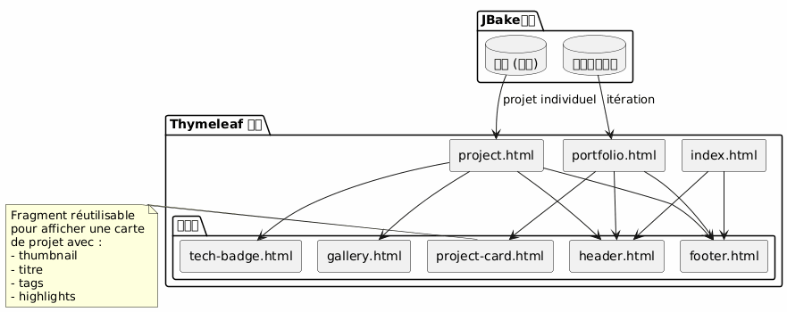
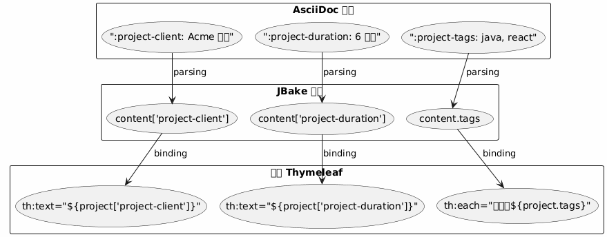
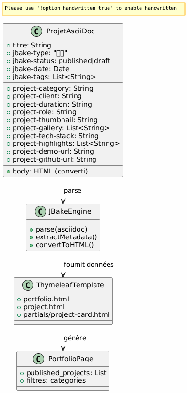
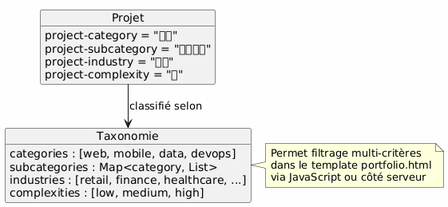

JBake架构作品集 - 愿景和用例
Publié le 15 January 2026
建筑愿景
指导原则
架构基于*关注点分离*的原则：
-
内容 : 结构丰富的 AsciiDoc 文件，带有丰富的元数据
-
Presentation : 可重用的 Thymeleaf 模板
-
数据 : 由 JBake 自动从 AsciiDoc 属性提取的模型
-
样式 : Bootstrap 5 用于视觉一致性
战略选择：AsciiDoc 用于投资组合
为什么 AsciiDoc ?
| 标准 | �优势 |
|---|---|
一致性 |
与博客文章相同的格式 |
元数据 |
结构化和可扩展的属性 ( |
可维护性 |
简单文本编辑，可由 Git 版本控制 |
灵活性 |
可以包含丰富内容 (表格, 代码, 图片) |
模板 |
JBake 自动提取 Thymeleaf 的属性 |
数据模型
每个投资组合项目都是一个 AsciiDoc 文档，包含：
-
表头元数据 : 结构化信息（客户、时长、技术等）
-
文档正文 : 叙事描述, 挑战, 解决方案, 结果
-
自定义属性 : 前缀`project-*`用于自动提取
详细用例
UC1 : 添加一个元素到投资组合
额定通量
Failed to generate image: PlantUML preprocessing failed: [From <input> (line 4) ] @startuml skinparam backgroundColor #FEFEFE actor Développeur as dev participant "编辑器 ^^^^^ Syntax Error? (Assumed diagram type: sequence) @startuml skinparam backgroundColor #FEFEFE actor Développeur as dev participant "编辑器 文本" as editor participant "文件\nAsciiDoc" as file participant "JBake 引擎" as jbake participant "站点 静态" as site dev -> editor : Créer nouveau fichier activate editor editor -> file : portfolio/nouveau-projet.adoc activate file dev -> editor : Rédiger en-tête avec métadonnées\n(titre, type=project, status=published,\nattributs project-*) dev -> editor : Rédiger contenu narratif\n(contexte, défis, solutions) dev -> editor : Ajouter images dans assets/img/portfolio/ editor -> file : Sauvegarder deactivate editor dev -> jbake : Lancer build (jbake -b) activate jbake jbake -> file : Lire et parser jbake -> jbake : Extraire métadonnées jbake -> jbake : Convertir AsciiDoc → HTML jbake -> jbake : Appliquer template project.html jbake -> jbake : Ajouter à la liste portfolio.html jbake -> site : Générer pages statiques deactivate jbake dev -> site : Vérifier résultat activate site site --> dev : Afficher projet deactivate site @enduml
要创建的文件模板
开发者创建`content/portfolio/nom-projet.adoc`具有标准化的结构：
-
包含所有必需属性的标题
-
标准化部分（背景、挑战、解决方案、结果）
-
图像的一致命名
验证点
-
必需的属性已存在 (
jbake-type,jbake-status,project-thumbnail) -
引用的图像存在于`assets/img/portfolio/`
-
JBake 构建成功，无错误
-
项目出现在作品集页面上
-
单个项目页面显示正常
UC2 : 删除投资组合中的一项
标称通量
Failed to generate image: PlantUML preprocessing failed: [From <input> (line 4) ] @startuml skinparam backgroundColor #FEFEFE actor Développeur as dev participant "系统 ^^^^^ Syntax Error? (Assumed diagram type: sequence) @startuml skinparam backgroundColor #FEFEFE actor Développeur as dev participant "系统 文件" as fs participant "JBake 引擎" as jbake participant "网站\n静态" as site database "缓存 JBake" as cache dev -> fs : Supprimer portfolio/projet-ancien.adoc activate fs fs --> dev : Fichier supprimé deactivate fs dev -> fs : (Optionnel) Supprimer images associées\nassets/img/portfolio/projet-ancien-* activate fs fs --> dev : Images supprimées deactivate fs dev -> cache : Nettoyer cache JBake activate cache cache --> dev : Cache vidé deactivate cache dev -> jbake : Rebuild complet (jbake -b) activate jbake jbake -> jbake : Scanner content/portfolio/ jbake -> jbake : Projet absent → non généré jbake -> jbake : Régénérer portfolio.html\n(sans le projet supprimé) jbake -> site : Déployer nouveau build deactivate jbake dev -> site : Vérifier activate site site --> dev : Projet absent de la liste deactivate site @enduml
替代策略：归档
而不是永久删除，可以创建一个文件夹`content/portfolio/archive/`:
-
移动文件而不是删除它
-
可以轻松恢复
-
保持 Git 历史更清晰
资源清理
-
检查孤立的图像在`assets/img/portfolio/`
-
删除未被其他项目引用的图片
-
清理 JBake 缓存以避免幽灵引用
UC3 : 设置为未发布（草稿）
�额定通量
Failed to generate image: PlantUML preprocessing failed: [From <input> (line 4) ] @startuml skinparam backgroundColor #FEFEFE actor Développeur as dev participant "文件 ^^^^^ Syntax Error? (Assumed diagram type: sequence) @startuml skinparam backgroundColor #FEFEFE actor Développeur as dev participant "文件 AsciiDoc" as file participant "JBake 引擎" as jbake participant "静态网站" as site dev -> file : Ouvrir portfolio/projet.adoc activate file dev -> file : Modifier attribut\n:jbake-status: published\n↓\n:jbake-status: draft file --> dev : Sauvegardé deactivate file dev -> jbake : Rebuild (jbake -b) activate jbake jbake -> file : Parser le fichier jbake -> jbake : Détecter status=draft jbake -> jbake : Exclure de published_projects jbake -> jbake : Ne pas créer page publique note right Le projet existe toujours mais n'est pas publié end note jbake -> site : Générer site (sans ce projet) deactivate jbake dev -> site : Vérifier portfolio activate site site --> dev : Projet absent de la liste publique deactivate site @enduml
可能的状态

典型用例
-
项目正在起草中 : 创建草稿，准备好后发布
-
临时保密项目：切换到草稿，等待客户确认
-
重大更新：切换到草稿，编辑，重新发布
-
A/B testing : 在草稿中复制，测试，发布最佳版本
模板化架构
可重用模板的策略

数据提取模式
JBake 会自动将 AsciiDoc 属性转换为在 Thymeleaf 中可访问的属性：

命名约定
-
项目属性 : 前缀`project-*` (ex:
project-client,project-tech-stack) -
文件 : kebab-case (例如:`ecommerce-platform.adoc`)
-
图片 : 前缀 项目名称 (例如:`ecommerce-platform-thumb.jpg`)
-
模板 : 功能名称 (例如：
project-card.html,tech-badge.html)
发布工作流
开发流水线

环境
| 环境 | 用法 | 已接受状态 |
|---|---|---|
本地 |
开发和预览 |
草稿，已发布 |
布置 |
�预生产验证 |
仅发布 |
生产 |
公开网站 |
仅发布 |
可扩展性
添加新属性
为丰富数据模型，只需添加带前缀的新属性`project-*`：
-
`project-awards`奖项与表彰
-
`project-testimonial`客户引用
-
project-team-size: 团队规模 -
project-budget-range�预算范围
这些属性会在模板中自动可用，无需修改JBake引擎。
高级分类

最佳实践
文件组织
-
一个文件 = 一个项目 : 避免混合多个项目
-
专用文件夹中的图像
assets/img/portfolio/nom-projet/ -
一致的命名 : 便于查找和维护
-
Versioning Git : 完全追踪修改
内容管理
-
默认草稿状态 : 仅在准备好时发布
-
发布前评审 : 质量和保密性验证
-
完整元数据：填写所有相关字段
-
丰富的叙事内容 : 不要仅限于元数据
性能
-
优化图片 : 提交前压缩
-
如需分页 : 如果项目数量超过20
-
Lazy loading : 图库图片按需加载
-
浏览器缓存：适用于资源的适当标头
结论
此架构允许：
-
使用简便 : 添加一个项目 = 创建一个文本文件
-
灵活性 : 可通过新属性扩展
-
可维护性 : 分离 内容/表现
-
可追溯性 : 完整的 Git 版本控制
-
自动化 : 可实现持续构建和部署
选择 AsciiDoc 能够与网站其余部分保持一致，同时提供专业投资组合所需的丰富元数据。